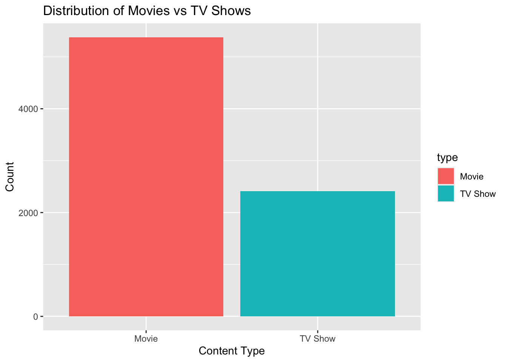
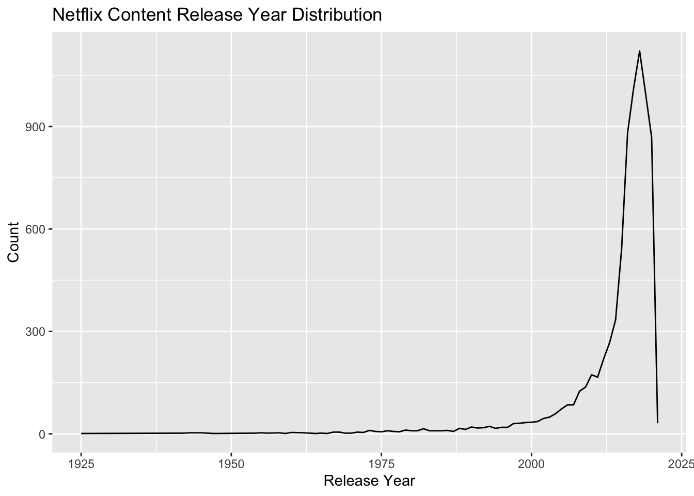
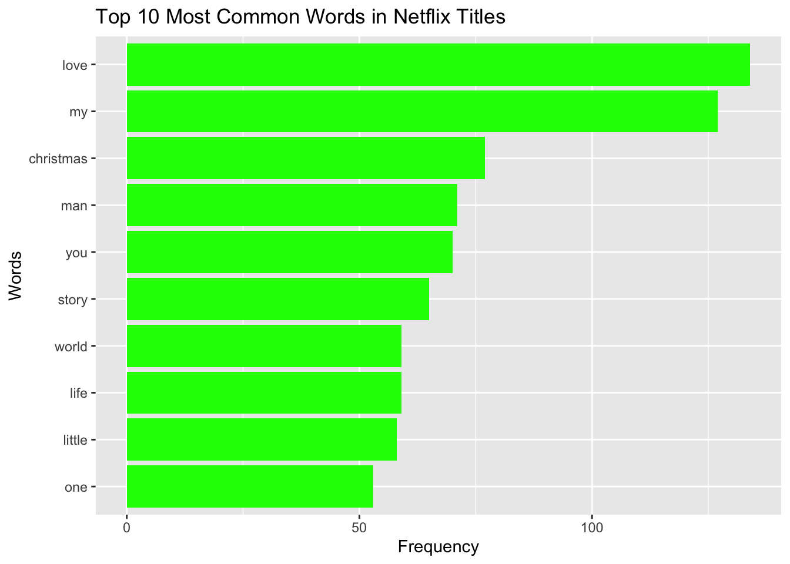

This is my second project which centers on analyzing the Netflix Titles dataset. The focus in this project is to utilize piping to better organize the data. In this project I made three different visualizations. The dataset provides insights into the types of content (movies and TV shows), their release years, associated metadata (e.g., directors, actors, countries of production), and trends across the Netflix platform.
This analysis uses data from the Netflix Titles Data Source, which is available through the TidyTuesday github repository.
Exploratory Data Analysis To introduce the dataset, I begin with a simple exploration of key variables:
# A tibble: 5 × 12
show_id type title director cast country date_added release_year rating
<chr> <chr> <chr> <chr> <chr> <chr> <chr> <dbl> <chr>
1 s1 TV Show 3% <NA> João… Brazil August 14… 2020 TV-MA
2 s2 Movie 7:19 Jorge Mich… Demi… Mexico December … 2016 TV-MA
3 s3 Movie 23:59 Gilbert Ch… Tedd… Singap… December … 2011 R
4 s4 Movie 9 Shane Acker Elij… United… November … 2009 PG-13
5 s5 Movie 21 Robert Luk… Jim … United… January 1… 2008 PG-13
# ℹ 3 more variables: duration <chr>, listed_in <chr>, description <chr>
A quick overview of the dataset reveals that the majority of content is categorized as either “Movies” or “TV Shows.” Below is a bar chart illustrating the distribution:
# Distribution of content typenetflix_type_count <- netflix |>count(type)ggplot(netflix_type_count, aes(x = type, y = n, fill = type)) +geom_bar(stat ="identity") +labs(title ="Distribution of Movies vs TV Shows",x ="Content Type",y ="Count" )

Here we can see data frames for the amount of movies and TV shows on Netflix from each release year and the amount of Movies and TV shows on Netflix. We can see that there are around double the amount of movies compared to TV shows. There seems to be a trend of more modern TV shows and movies on Netflix.
Content Trends Over Time Analyzing release years shows a clear trend: Netflix’s library is heavily skewed toward modern content, with the majority of titles released after 2000. The following line chart visualizes the distribution of release years:
# Distribution of release yearsnetflix_year_count <- netflix |>count(release_year) |>arrange(desc(n))ggplot(netflix_year_count, aes(x = release_year, y = n)) +geom_line() +labs(title ="Netflix Content Release Year Distribution",x ="Release Year",y ="Count" )

From the line chart we can see that movies after 2000 dominate Netflix’s discography.
Next I attempted to explore linguistic patterns in Netflix titles. I used str functions str_detect() and str_to_lower() to look for a popular word. Used regular expression “love” to look for the word love in movie and TV titles.
# Count titles containing the word "love"love_count <- netflix |>filter(str_detect(str_to_lower(title), "love")) |>summarise(count =n())love_count
# A tibble: 1 × 1
count
<int>
1 175
Uses regular expression “life|world|death” to search for more possible popular words in move/tv show titles.
# Titles containing the words "life", "world", or "death"keywords_titles <- netflix |>filter(str_detect(str_to_lower(title), "life|world|death"))head(keywords_titles,10)
# A tibble: 10 × 12
show_id type title director cast country date_added release_year rating
<chr> <chr> <chr> <chr> <chr> <chr> <chr> <dbl> <chr>
1 s150 Movie A Beau… Andrew … Qi S… China,… December … 2011 TV-14
2 s195 Movie A Life… Francis… <NA> Argent… March 20,… 2020 TV-14
3 s310 Movie Addict… Thierry… Anto… France June 12, … 2014 TV-14
4 s325 TV Show After … <NA> Rick… United… April 24,… 2020 TV-MA
5 s379 Movie Alex F… Alex Dí… Alex… Mexico January 2… 2020 TV-MA
6 s399 TV Show Alien … <NA> <NA> United… December … 2020 TV-PG
7 s421 Movie All th… Yibrán … Háns… Mexico January 3… 2020 TV-14
8 s530 Movie Animal… Han Yan Li Y… China September… 2018 TV-MA
9 s544 TV Show Anothe… <NA> Kate… United… July 25, … 2019 TV-MA
10 s559 TV Show Apache… <NA> Balt… Argent… August 16… 2019 TV-MA
# ℹ 3 more variables: duration <chr>, listed_in <chr>, description <chr>
Then I proceeded to create a count for each of the selected words.
# Count occurrences of each word "life", "world", and "death" in the titlesword_count <- netflix |>mutate(title_lower =str_to_lower(title)) |>summarise(life_count =sum(str_count(title_lower, "life")),world_count =sum(str_count(title_lower, "world")),death_count =sum(str_count(title_lower, "death")) )word_count
The following code chucks perform three different tasks of counting occurrences of directors, actors, and countries, and then displaying the top 10 most popular in each category. It filters out missing or empty values and splits data where necessary (such as for actors and countries with multiple entries separated by commas).
# Count the number of occurrences of each director, excluding missing valuespopular_directors <- netflix |>filter(!is.na(director) & director !="") |>count(director) |>arrange(desc(n))# View the top 10 most popular directorshead(popular_directors, 10)
# A tibble: 10 × 2
director n
<chr> <int>
1 Raúl Campos, Jan Suter 18
2 Marcus Raboy 16
3 Jay Karas 14
4 Cathy Garcia-Molina 13
5 Jay Chapman 12
6 Martin Scorsese 12
7 Youssef Chahine 12
8 Steven Spielberg 10
9 David Dhawan 9
10 Hakan Algül 8
# Separate the cast into individual actors and count their occurrencespopular_actors <- netflix |>filter(!is.na(cast) & cast !="") |>separate_rows(cast, sep =", ") |>count(cast) |>arrange(desc(n))# View the top 10 most popular actorshead(popular_actors, 10)
# Separate the country column into individual countries and count their occurrencespopular_countries <- netflix |>filter(!is.na(country) & country !="") |>separate_rows(country, sep =", ") |>count(country) |>arrange(desc(n))# View the top 10 most popular countrieshead(popular_countries, 10)
# A tibble: 10 × 2
country n
<chr> <int>
1 United States 3296
2 India 990
3 United Kingdom 722
4 Canada 412
5 France 349
6 Japan 287
7 Spain 215
8 South Korea 212
9 Germany 199
10 Mexico 154
It was very interesting to see the large amount of Indian actors appearing in tv shows/movies compared to the total amount of Indian movies. Perhaps there is a fewer supply of popular actors in Bollywood compared to Hollywood in the United States.
Finally, I created a table that has the top 10 most popular words in Netflix titles. I excluded common conjunction words such as “the”, “and”, or “of”. I also used the regular expressions \d and \s+ to filter out digits and whitespace.
netflix_lowercase_titles <- netflix |>mutate(lower_title =str_to_lower(title))#Use regular expressions to extract words and exclude those containing digitsnetflix_words <- netflix_lowercase_titles |>separate_rows(lower_title, sep ="\\s+") |>filter(!str_detect(lower_title, "\\d"))#Remove common words that are not of interestcommon_words <-c("the", "and", "in", "of", "to", "a", "is", "for", "with", "on", "at", "by", "an", "from", "i", "&")netflix_words_final <- netflix_words |>filter(!is.element(lower_title, common_words))#Count the frequency of each wordpopular_words <- netflix_words_final |>count(lower_title, sort =TRUE)head(popular_words, 10)
# A tibble: 10 × 2
lower_title n
<chr> <int>
1 love 134
2 my 127
3 christmas 77
4 man 71
5 you 70
6 story 65
7 life 59
8 world 59
9 little 58
10 one 53
Lastly, I created a bar chart from the previous data frame in order to visulize the top 10 most common words in Netflix titles.
popular_words |>head(10) |>ggplot(aes(x =reorder(lower_title, n), y = n)) +geom_bar(stat ="identity", fill ="green") +coord_flip() +labs(title ="Top 10 Most Common Words in Netflix Titles",x ="Words",y ="Frequency")

My early prediction of “love”, “life”, “world” all being popular words in titles turned out to be true. However, “death” did not make the top 10.
Conclusion This project was a great opportunity to practice and build my string manipulation and regular expression skills. By working with the Netflix Titles dataset, I applied several str_*() functions and regular expressions to clean and analyze text data, which was a valuable hands-on experience in managing and extracting important information from more unstructured data. Creating visualizations helped reinforce the importance of organizing data effectively for clear storytelling and making results accessible. This project also revealed some interesting trends in Netflix’s content catalog. The analysis revealed that Netflix’s library is dominated by modern content, with movies significantly outnumbering TV shows. Common themes in titles included “love,” “life,” and “world,” while “death” was less frequent. Indian actors appeared frequently compared to the smaller number of Indian movies, highlighting unique industry dynamics.